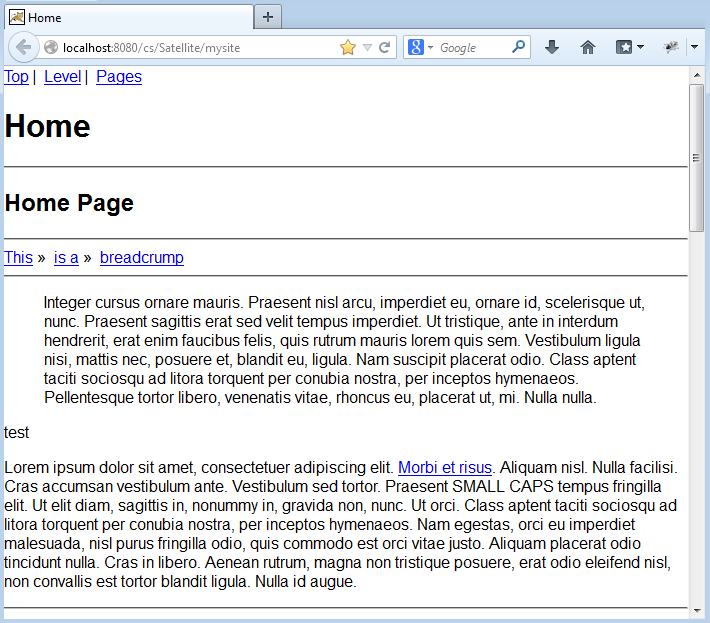

AgileSites
the Easy framework for Agile development with Oracle WebCenter Sites
Picker
Prev: Java Idiom
Here we introduce the AgileSites template engine, the picker. Picker is very helpful in keeping the HTML in his original form and placing content where is needed. It will result in code much clearer without a confusing mix of html and java code as in JSP.
Here there is a quick introductin to the picker including some samples. Full documentation is here.
The picker
The Picker is the template engine of AgileSites.
It is a bit different by other template engines and it differs from traditional JSPs because it works using the pure original HTML mockup, leaving it in the original form, so web designer can update them easily.
HTML is then used selecting snippets inside to build pagelet (see Sites documentation for an introduction to pagelets) then modified by java code. The HTML mockup is the view of our application, the java code is the controller and the content model is managed in Sites.
Since most of the work in the CMS implementation requires you extract some content from the CMS and place in specific places in the template it results in simple code with a logic much cleaner since the developer is not required to follow a sequential order when placing the content inside the HTML.
The Picker works a in a way similar to the jQuery javascript library (indeed it uses the same css-based selector syntax of jQuery) but the logic is written in java instead of javascript, and it is executed server side, not client side.
Let's introduce how the picker works with some samples. We are going to replace the default html view generated by the generator (the /mysite/simple.html) with the layout of the demo site based on the blueprint css framework.
Changing the layout
As a first step we will replace the template used for the mysite.element.page.HomeLayout class generated in the previous section and change the /mysite/simple.html as follows
Picker html = Picker.load("/blueprint/template.html" , "#content");
After changing the code, nothing happens, because java code must be compiled, packaged in a jar and deployed. Luckily, all this work is done by the command wcs-package-jar.
So just go in the shell and type this command. Once done, access to the site with:
http://localhost:8080/cs/Satellite/mysite
and you should see the following image:

The html changes but the css does not look correct. We will fix it now.
Continuos Compilation
To get our changes of the code we need to compile the code. This is a single step that is not that complex, however we can do better.
With the following command (note the tilde character) we enter in continuous compilation mode.
~wcs-package-jar
In this mode the shell will monitor source code for changes and when any source file changes (because it was edited), the code is recompiled, packaged and deployed.
Since the amount of code to be compiled is usually pretty small (even for a very large site) the compilation takes just a fraction of second so the compiled code is instantly available when you reload the page to see the results.
In rest of this tutorial we will assume that continuos compilation is enabled, so after a change to the code you can immediately see the results without having to execute manually the compilation command.
The rendering cycle
Before going into the details, we need to understand the rendering process. In the reference the process is described in larger detail. Here you need to know that, after you typed the URL to access the home, this is what happens:
- the router (class
mysite.Router) is invoked to map page names in page id - the wrapper (class
mysite.element.Wrapper) is invoked with the id of the Home Page - the wrapper will identify the layout and call it
It is important to understand that the Router does not generate any HTML, the Wrapper generates the html common to every web page in the site (especially css and javascript inclusions), and finally the HomeLayout generates the specific content of the home page.
Please note that we are picking the internal html from the HomeLayout from the file /blueprint/template.html but in the Wrapper we are still using /mysite/simple.html for the html of the wrapper. Let's fix it.
Changing the wrapper
Open the class mysite.element.Wrapper and change the beginning of the method apply as follows:
Picker html = Picker.load("/blueprint/template.html");
// change relative references to absolute
html.prefixAttrs("link[rel=stylesheet]", "href", "/cs/blueprint/");
Here we assume you have a ~wcs-package-jar running so just reloading the home page you should see this:

Changing the Picker parameter you load a different template. Note that here you selected the full html page of the template, including the headers, while in the layout using the selector "#content" you are selecting only the inner parts.
NOTE here we assume you are using the Jump Start Kit to follow the tutorial, based on Tomcat with a webapp folder named '/cs'
Html (stored under app/src/main/static are included in the jar, so you need to use an absolute path within the jar to locate it. Css and javascripts are copied in the '/cs/' folder of the application server, so everything stored in the static folder requires the '/cs' prefix to be accessed. As a result the static html and css are accessible as:
http://localhost:8080/cs/blueprint/
So to access to the css you need to add the prefix '/cs/blueprint' to the href attribute for link tags.
Code to use javascript in the template is slightly more complex. Plese check the demo.Wrapper class for details.
Next: Read Content
AgileSites - Written by Michele Sciabarrà - © 2013 Sciabarra srl
Open Source Software releases under the Apache License 2.0
Credits: Hosted on GitHub Pages using the Dinky theme for Jekyll Bootstrap